Présentation
Sommaire
Fonctionnement
MineDrop est un jeu de hasard qui utilise des détecteurs de mouvements pour alimenter un jeu sur une interface web. Le joueur aura à utiliser ses mouvements pour utiliser le jeu et se faire des crédits qui serviront de monnaie pour jouer. Le but de ce jeu est de miner des colonnes pour se rendre au coffre. Le coffre contient un multiplicateur pour multiplier la mise comme le jeu sur Stake.
Réponse aux défis et contraintes
- Le détecteur de mouvement doit bien reconnaître les mouvements pour donner des points spécifiques pour différents mouvements. Pour ce faire, on doit faire en sorte que le système reconnaisse les mouvements en étant très précis.
- Les pioches et les matériaux sont déterminés au hasard.
- Lorsqu'il n'existe plus de blocs dans la colonne, le coffre s'ouvre quand le jeu finit. Lorsqu'il n'existe plus de blocs dans la colonne, il ne doit plus y avoir de pioches disponibles.
Interactions attendues
- Amorce : le joueur se place devant la borne et met sa mise en crédits pour démarrer la partie.
- Déroulement : le joueur fait des mouvements devant la caméra pour recevoir des crédits afin de miner les colonnes. Les pioches et les matériaux sont déterminés au hasard. Quand il ne reste plus de colonnes, le coffre s'ouvre avec un multiplicateur.
- Temps : une partie dure plus ou moins une minute selon la chance du joueur avec les pioches.
Schématisation matérielle

Schématisation logicielle

Justification des technologies
- OpenCV : utilisé pour capturer le flux vidéo de la webcam.
- MediaPipe : permet de détecter les poses corporelles en temps réel.
- Python : notre langage principal côté serveur, car c'est le langage où OpenCV et MediaPipe sont le mieux intégrés.
- React : nous permet de créer une interface web réactive qui se met à jour en temps réel selon les mouvements du joueur.
- TailwindCSS : framework CSS utilitaire qui va rendre l'interface plus belle.
- Raspberry Pi : petit ordinateur compact, suffisamment puissant pour le traitement vidéo.
Matériel
Liste du matériel
Webcam eMeet C960
Fabricant : Emeet
Modèle : C960
Nous comptons utiliser cette technologie pour capturer les mouvements que la personne fera pour lui donner des crédits en fonction des mouvements reçus.
Nous utilisons une webcam, car il n'y a pas d'autres moyens d'utiliser une caméra pour faire l'expérimentation avec une bonne définition pour bien capter les mouvements.
Expérimentée par Adam.
CanaKit Raspberry Pi 4 Starter Kit
Fabricant : Raspberry Pi Ltd
Modèle : Raspberry Pi 4 Model B
Le Raspberry Pi sert principalement à héberger notre jeu et connecter les périphériques nécessaires au fonctionnement du jeu : webcam, écran, clavier et souris.
- Coût abordable : solution très économique comparé à un ordinateur, avec une puissance amplement suffisante.
- Compact : format idéal pour une installation fixe ou le déplacement.
- Compatible avec Linux : idéal pour les librairies utilisées comme OpenCV.
Expérimentée par Anthony.
Expérimentations
CanaKit Raspberry Pi 4 Starter Kit
Tests des périphériques
Réalisée par Anthony
La première étape était de tester les périphériques nécessaires à notre jeu (clavier, souris, webcam). En installant la librairie usbutils, on peut afficher les périphériques connectés.
Étape 1 — Installation de usbutils
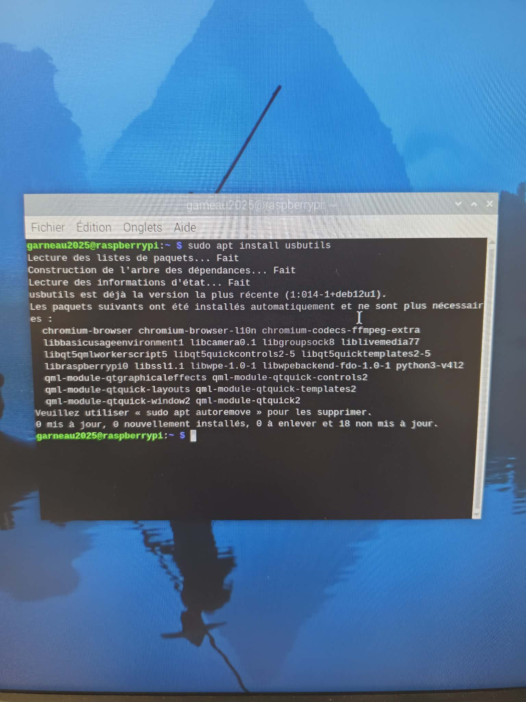
Étape 2 — Affichage des périphériques
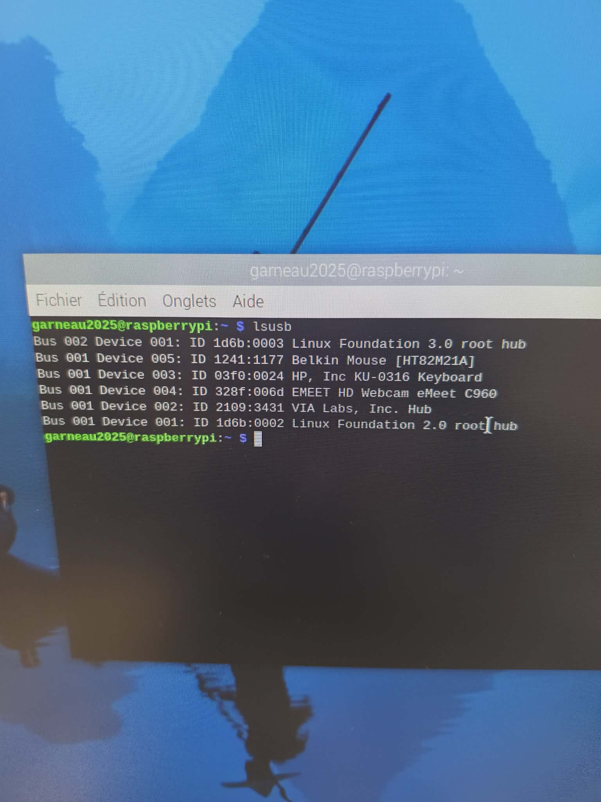
Le clavier et la souris fonctionnaient directement au lancement. Par contre, même si le Raspberry Pi reconnaît la webcam, il fallait installer une librairie supplémentaire pour tester son fonctionnement.
Étape 3 — Installation de fswebcam
fswebcam permet de tester la webcam et de télécharger la photo dans les dossiers.
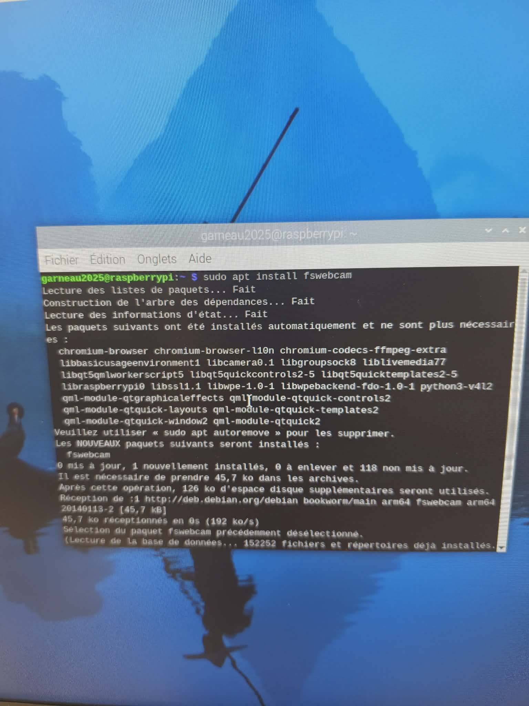
Étape 4 — Commande pour prendre la photo
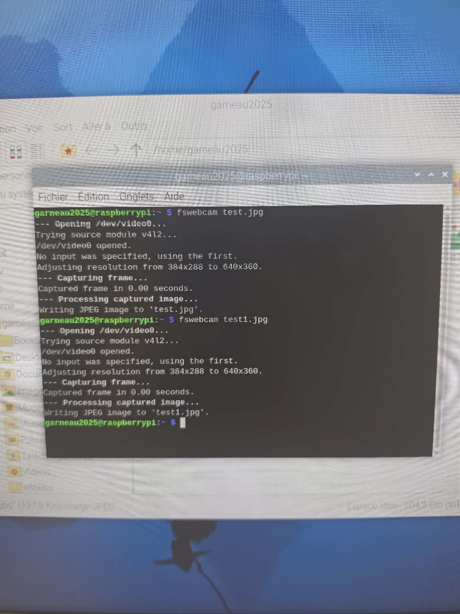
Étape 5 — Image capturée
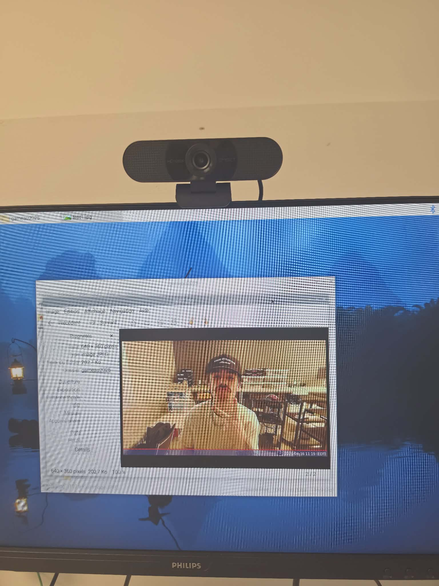
Le dernier test était d'ajouter un programme et de le lancer, car le Raspberry Pi sert uniquement au lancement du jeu et non au développement.
Étape 6 — Ajout du programme
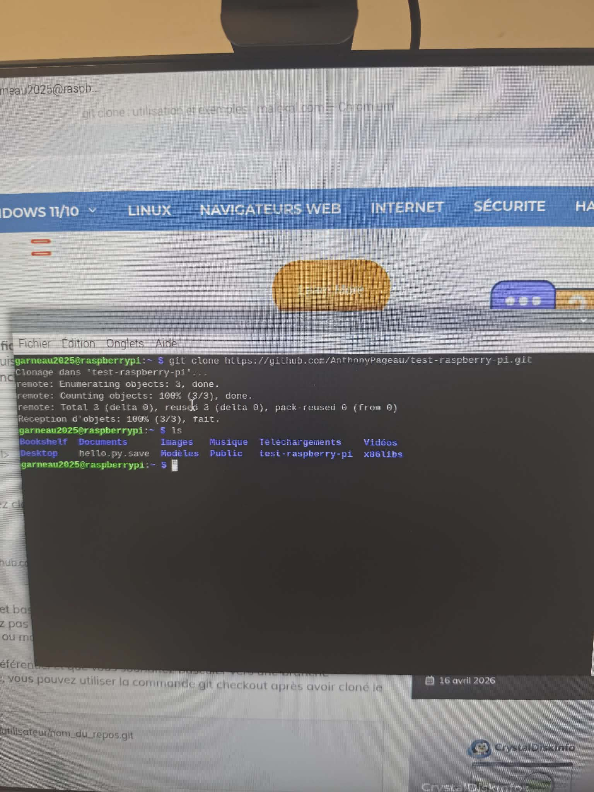
Étape 7 — Lancement du programme
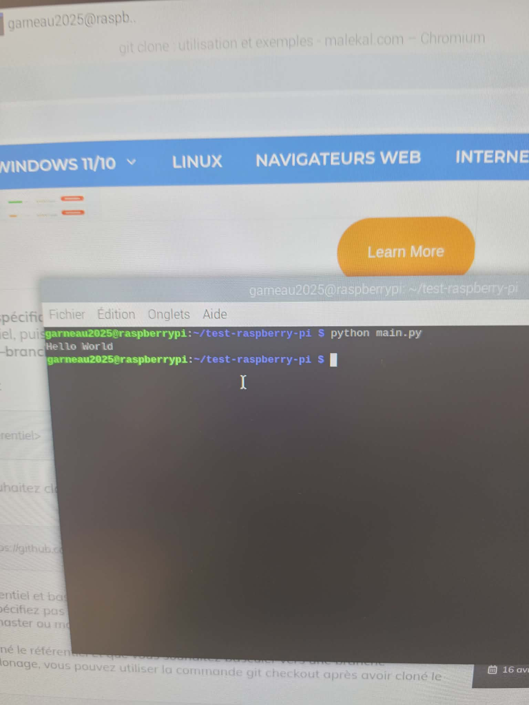
Webcam + OpenCV + MediaPipe
Capture vidéo et détection de mouvements
Réalisée par Adam Auger
Liste des expérimentations nécessaires :
- Expérimentation 1 : Capture du flux vidéo de la webcam
- Expérimentation 2 : Détection des poses corporelles
- Expérimentation 3 : Détection des mouvements
Expérimentation 1 — Capture du flux vidéo
Webcam + OpenCV
Le but de cette première expérimentation est de voir le flux de la webcam et de l'afficher dans une fenêtre en utilisant OpenCV. Le contexte de réalisation est un petit script Python qui permet de capturer le flux vidéo de la webcam et de l'afficher dans une fenêtre.
Résultat : Très bien, le flux est amplement assez bon pour pouvoir utiliser la webcam.
Avis : Une webcam va être amplement suffisante pour la résolution dont on a besoin pour le projet, et OpenCV fonctionne très bien pour gérer son flux.
Expérimentation 2 — Détection des poses corporelles
Webcam + MediaPipe
Le but de cette deuxième expérimentation est de détecter les poses corporelles en utilisant MediaPipe. Le contexte de réalisation est un petit script Python qui permet de détecter les poses corporelles en utilisant MediaPipe.
Résultat : On est capable de bien voir mes membres et les points suivent mes mouvements.
Avis : MediaPipe fonctionne très bien pour détecter les mouvements du corps et les points suivent mes mouvements.
Expérimentation 3 — Détection des mouvements
Webcam + OpenCV + MediaPipe
Le but de cette troisième expérimentation est de détecter les mouvements en utilisant OpenCV et MediaPipe. Le contexte de réalisation est un petit script Python qui permet de détecter les mouvements en utilisant OpenCV et MediaPipe.
Résultat : On est capable de bien voir mes mouvements quand je fais la danse de miner.
Avis : OpenCV et MediaPipe fonctionnent très bien pour détecter les mouvements et les points suivent mes mouvements même quand je fais des mouvements bizarres.
Avis final : Les deux technologies vont amplement faire l'affaire pour notre projet.
Montage
Liste des technos impliquées
- CanaKit Raspberry Pi 4 Starter Kit
- Webcam eMeet C960
Ordre et instructions pour le montage
- Mettre le logiciel dans le raspberry-pi-4-starter-kit
- Mettre la caméra de façon à ce qu'elle apperçoit bien les mouvements
- Placer l'écran au dessus de la caméra
Photos du montage
Début du montage
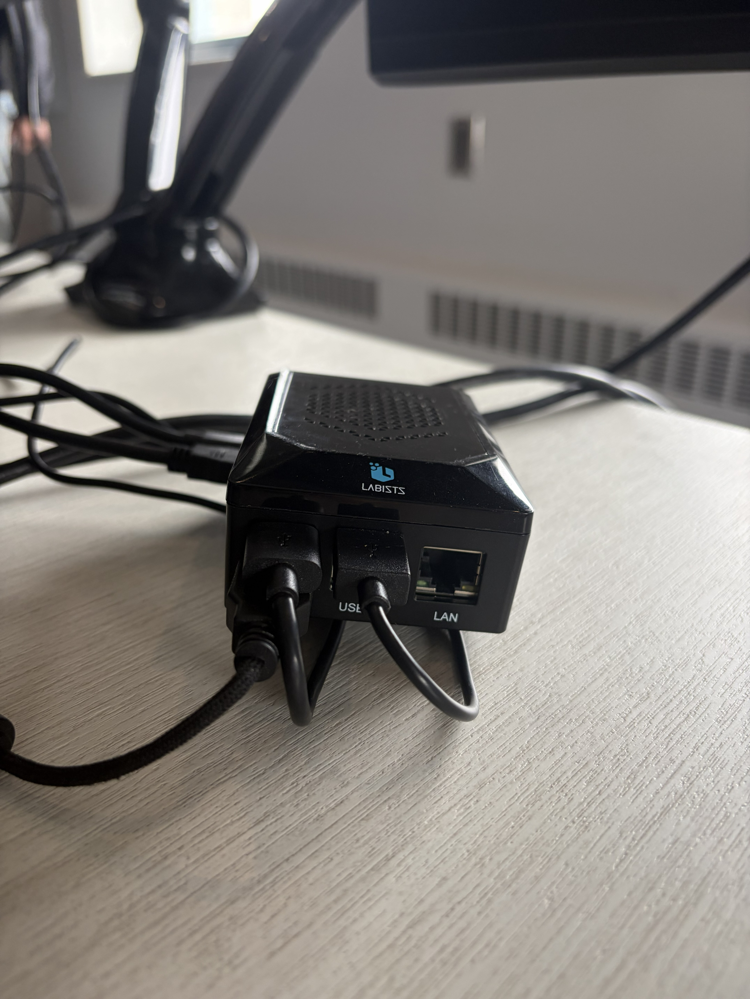
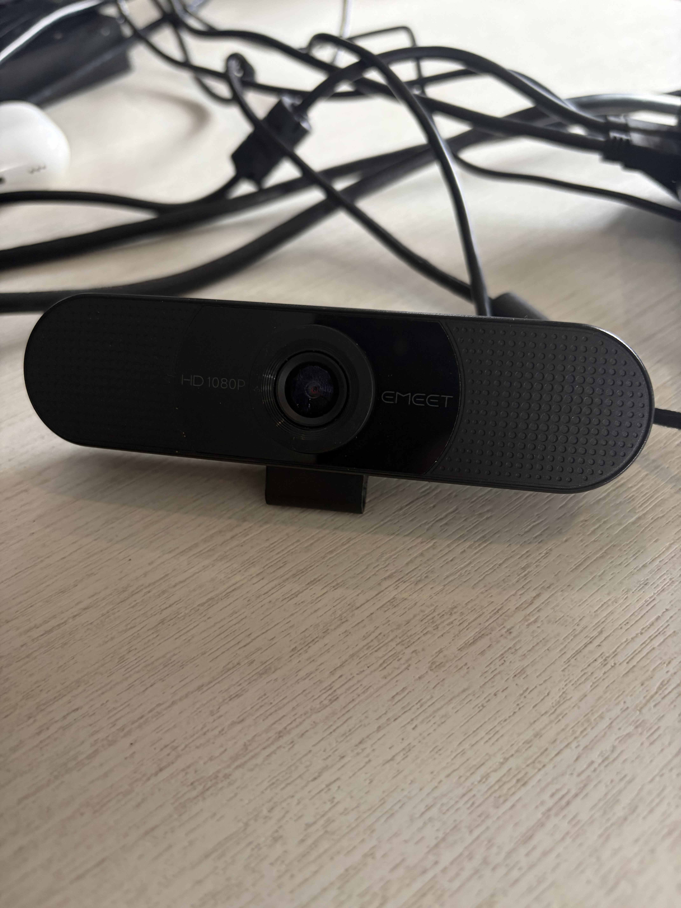
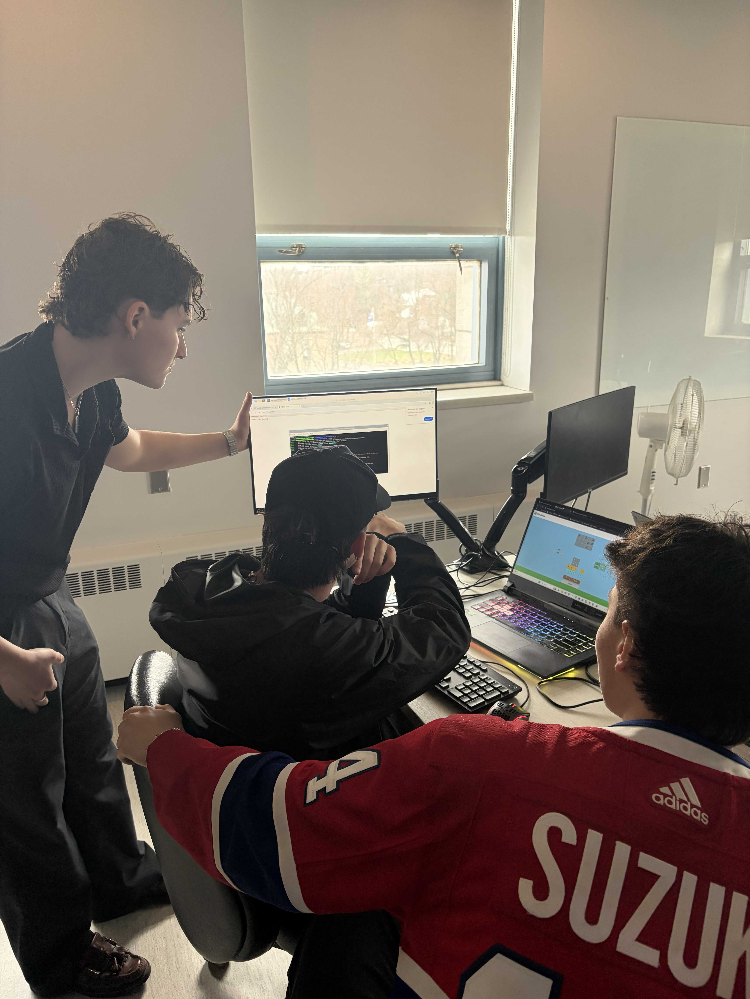
Logiciel
Stack technologique
Pour notre stack technologique, Au niveau du frontend, nous utilions React en Javascript accompagné de TailwindCSS. Pour le backend, nous utilisons Python avec FastAPI et MediaPipe.
Justification du choix des technos
Pour notre choix technologique, nous avons décider d'utiliser des technos simples pour notre cas d'utilisation et des technos que nous sommes à l'aise d'utiliser. Pour le backend, Python semblait le choix le plus logique vue qu'il est le meilleur pour la reconnaissance visuelle. Le frontend en React est pratique car il apporte des outils utiles pour intégrer notre backend Python.
Captures d'écran des étapes d'utilisation
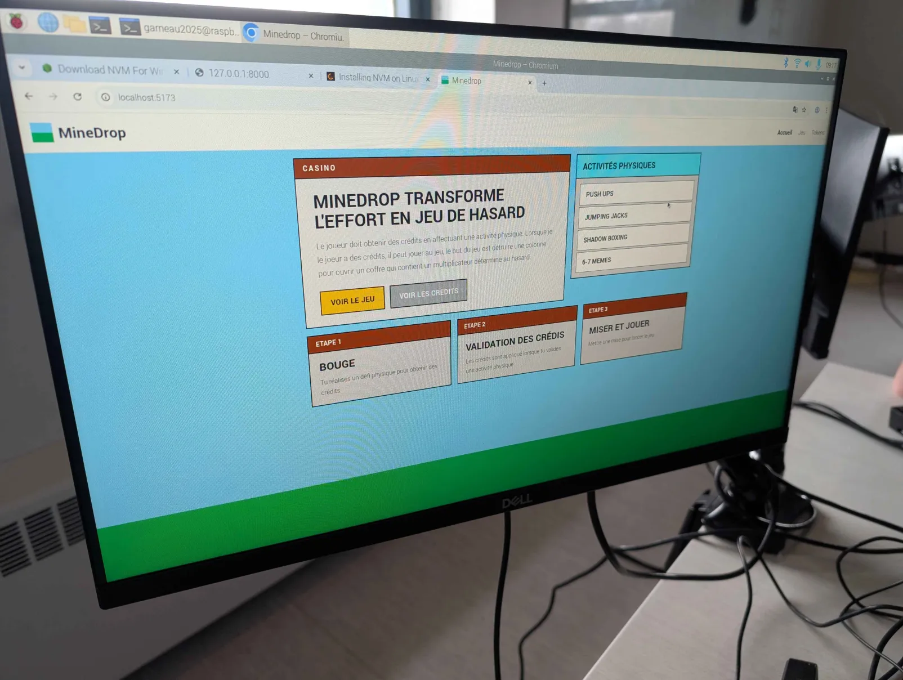
Écran d'accueil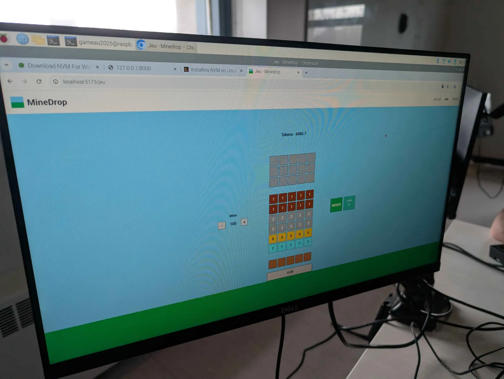
Écran de jeu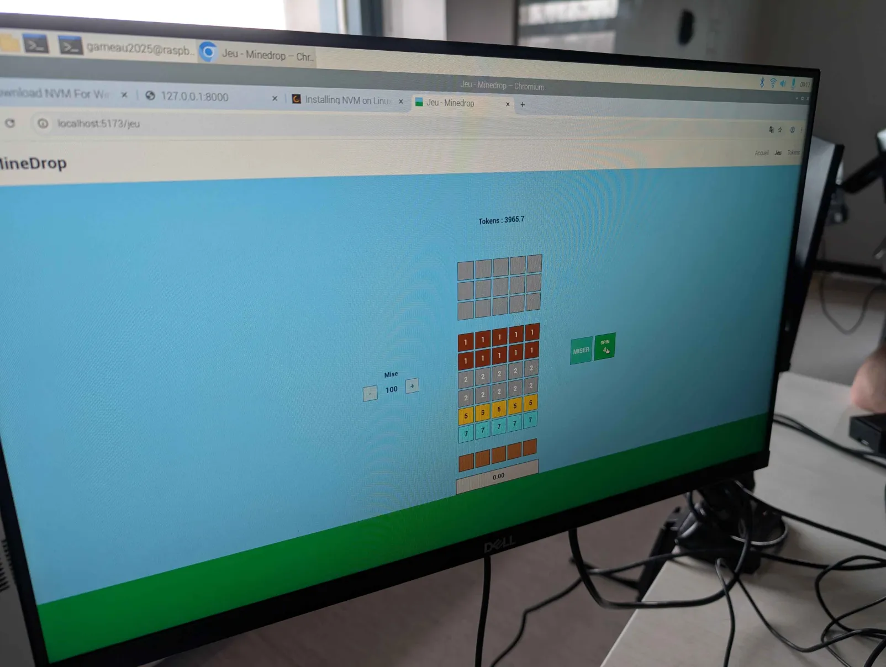
Écran de spin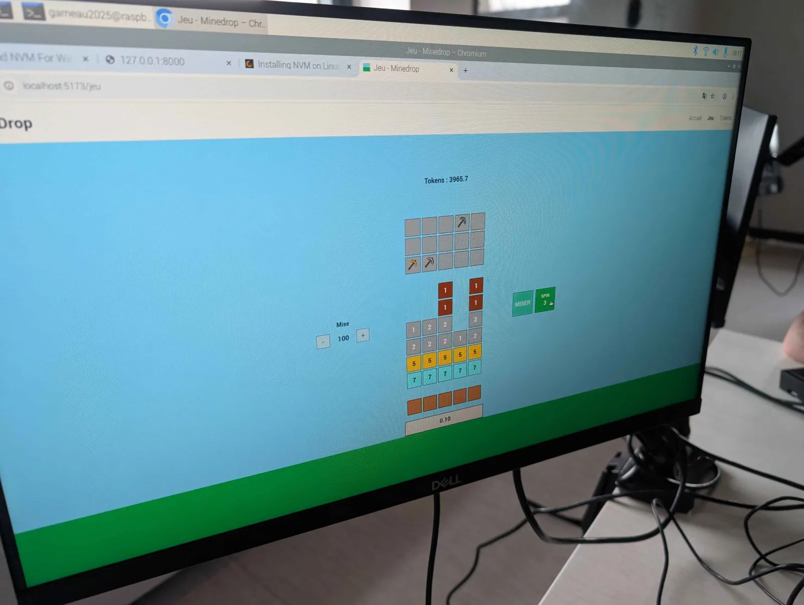
Écran de jeu en cours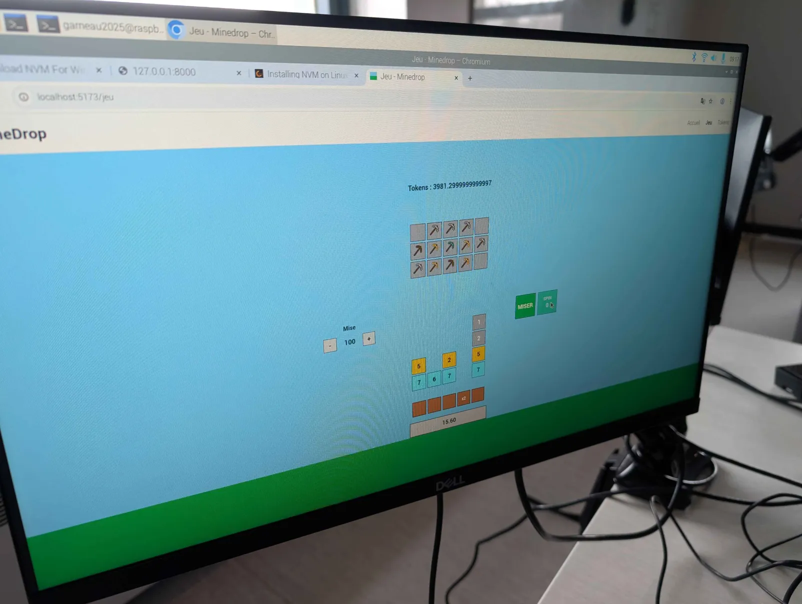
Écran de fin de partie